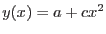

subroutine fitPolynomial(x, y, coeffs, yVar, pinMask, chi2, errMatrix, status)
real(single), intent(in) :: x(:),&
y(size(x))
real(single), intent(inout) :: coeffs(:)
real(single), intent(in), optional :: yVar(size(x))
logical(bool), intent(in), optional :: pinMask(size(coeffs))
real(single), intent(out), optional :: chi2,&
errMatrix(size(coeffs),&
size(coeffs))
integer, intent(out), optional :: status
end subroutine fitPolynomial
This subroutine fits a polynomial to the set of points defined by x and y. The order of the polynomial is given by the size of the vector `coeffs'. As per usual, only the y values are assumed to have significant uncertainties. The subroutine solves normal equations to arrive at a solution which minimizes  between the data and the fitted polynomial.
between the data and the fitted polynomial.
Some or all of the coefficients can be 'pinned' or not fitted. These values should be supplied in the vector `coeff' (note that this is of intent `inout' as required). The appropriate members of `pinMask' should be set to TRUE; all other members of `pinMask' should of course be FALSE. For example, suppose it was desired to fit to the data a function of the form . This is equivalent to fitting a full quadratic function to the data, but with the linear coefficient pinned at 0. To achieve this result, `coeff' and `pinMask' should be of size 3, with the following values set:
coeff(2) = 0.0 pinMask = /(.false. .true. .false.)/
The general form of the normal equations in the event of pinning is perhaps best illustrated by using the above example. In this case the equations are
Note that the matrix of uncertainties in the fitted coefficients as well as the  value at the optimum are also returned.
value at the optimum are also returned.